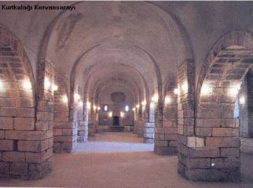
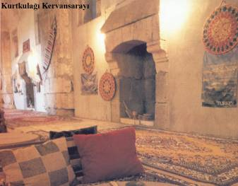
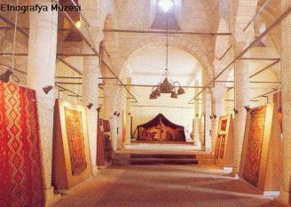

Galatasaray Başkanı Dursun Özbek'ten sürpriz bir hamle geldi. Kulüpler Birliği'nin başkanlığına soyunan Özbek, kulüpler arası atışmaları doğru bulmadığını ve bu konunun daha uygun şekillerde çözümlenmesi gerektiğini masaya yatırdı.
Adana'da PKK/ KCK terör örgütü adına eylem yapıp, güvenlik güçlerine molotof kokteyli atan 5 kişi tutuklandı. Terörle Mücadele Şubesi ekipleri, 9 Ocak'ta merkez Yüreğir İlçesi'nin Anadolu, Dede Korkut ve 19 Mayıs Mahallesi ile ara sokaklarında toplanıp, korsan gösteri düzenleyen PKK/KCK yandaşlarına müdahale etti.
Sultanahmet Meydanı'nda saat 10.20'de çok şiddetli bir patlama meydana geldi. Olay yerine ambulans, polis ve itfaiye araçları sevk edildi. Bölgede olağanüstü güvenlik önlemleri alındı, tramvay seferleri durdu.
Bir toplumun maddi ve manevi değerlerinin birikimi, o toplumun kültürünü meydana getirir. Bir çok iç ve dış etkenlerin yarattığı sentez, toplumun belli bir dönemdeki kültürünü belirler. Verimli topraklar ve coğrafi konumu nedeni ile tarih öncesi çağlardan başlayarak değişik ulusların akınına uğramış bölgede Çukurova kültürünü bu uygarlıklardan parça parça briktirilmiş taşlarla oluşturulmuş bir yapı olarak tanımlamak da mümkündür.
Bu kültür sentezini oluşturan etkenler içinde Hitit kültürü ağırlıklı bir yer tutmakla birlikte, diğer ulusların verdiği katkılarla da tarih boyunca zenginleşmiştir. Burada hüküm sürmüş 10 medeniyetin etkileri Adana'nın kültür yaşamında, hala görülmekte ve hissedilmektedir. Adana ve Çukurova kültürünü önemli şekilde etkileyen gruplar özellikle göçebe, Türkmen ve yörük aşiretleridir. 
7-11.yy. arası Bizanslılar, Araplar ve aradaki küçük bir çok siyasi toplulukların kültür etkileri altında gelişen Anadolu, 11,yy. dan itibaren tamamen Selçuklu kültürü etkisi altına girmiştir. Selçukluların ve onları takiben beylik devrinin etkileri Çukurova'da çok belirgindir. Beylik devrine damgasını vuran Ramazanoğlu Beyliğinin zengin kültür varlıkları bugün de hala görülmektedir. Beylikler sonrası Osmanlı devrinden kalma yazılı kaynaklar (Şeri/mahkeme Sicilleri veya Ziya Paşa devri kayıtları) zamanın gelişimine ışık tutmaktadır.
 Ovadan çok Toroslarda yerleşen Türk (Yörük, Türkmen) aşiretleri uzun yüzyıllar dış etkenlere kapalı kalmış ve en az 10-15 asırlık Türk Müslüman kültürünü pek fazla değişmeden muhafaza etmeyi başarmışlardır. Adana'nın daha ovalık kesimlere yerleşmesi 19.yy. (Osmanlı devrine, Cevdet ve Derviş Paşalar dönemine ) rastlamaktadır.
Özellikle 19.ve20. yüzyıllarda Adana ovasında yerleşimin artmasıyla tarımda ve sanayileşmede büyük atılımların olması, yörenin kültüründe büyük değişiklikler yaratmıştır. Ayrıca yörede yayla, deniz ve ova kültürünün de karışımı ile yeni bir kent kültürü meydana gelmiştir.